Introduction
Cooking is both an art and a science, and it can be a rewarding experience for anyone willing to learn. Whether you’re a novice in the kitchen or looking to refine your skills, these essential cooking tips will help you elevate your culinary game. From preparation techniques to flavor experimentation, these guidelines will transform the way you cook and enjoy food. Let's dive in!
Cooking Tips
1. Mise en Place: The Key to Success
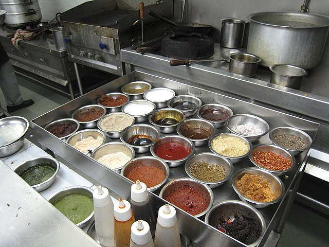Tip: Before you start cooking, gather and prepare all your ingredients. This means chopping vegetables, measuring spices, and having all your tools ready.
2. Invest in Quality Knives
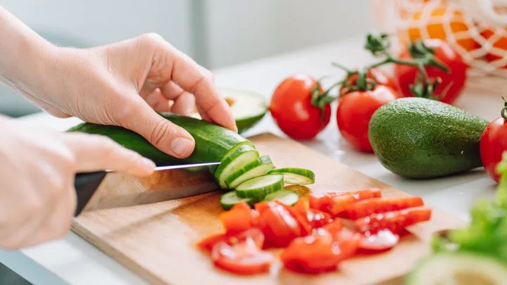Tip: A good chef’s knife can make a world of difference. Keep it sharp and learn how to use it properly to enhance your chopping skills.
3. Understand Cooking Techniques
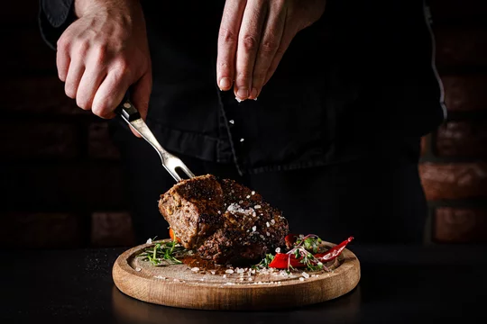Tip: Familiarize yourself with basic cooking techniques like sautéing, roasting, boiling, and grilling. Each technique can dramatically change the flavor and texture of your food.
4. Seasoning is Everything
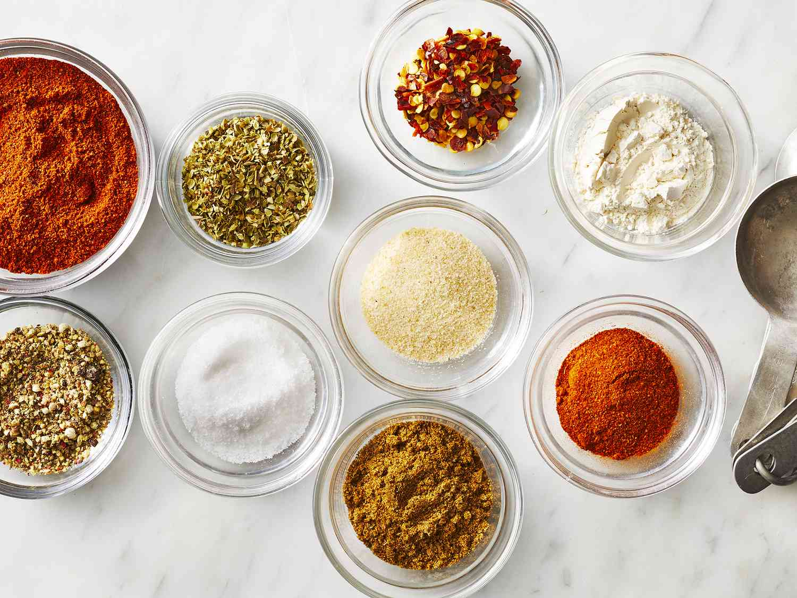Tip: Don't be afraid to experiment with herbs and spices. Taste your food as you cook and adjust seasoning accordingly.
5. Don’t Overcrowd the Pan
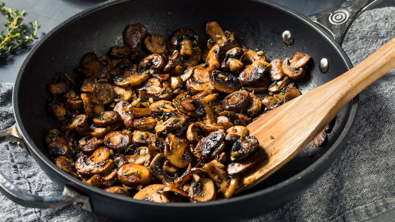Tip: When sautéing or frying, give your ingredients space. Overcrowding can cause steaming instead of browning, leading to less flavor.
6. Let Meat Rest
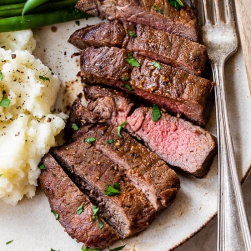Tip: After cooking, let your meat rest for a few minutes before slicing. This allows juices to redistribute, resulting in a more tender bite.
7. Use Fresh Ingredients
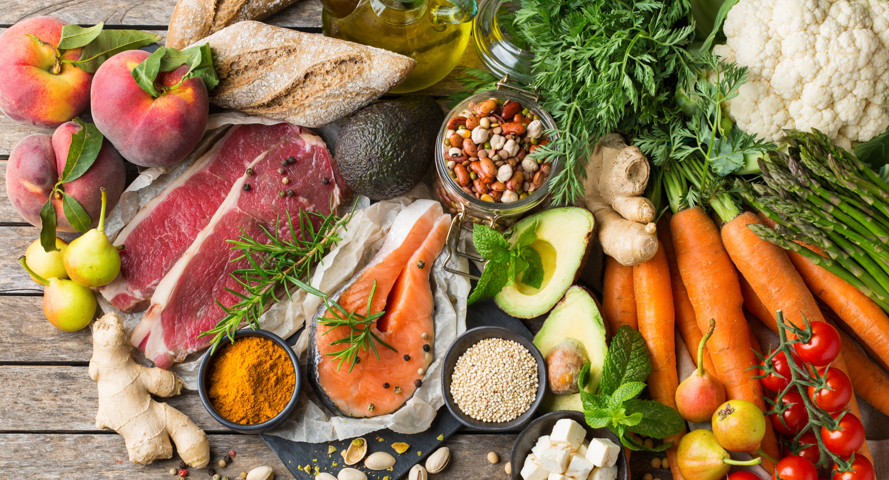Tip: Whenever possible, use fresh produce and meats. They not only taste better but also provide more nutrients.
8. Keep Your Kitchen Organized
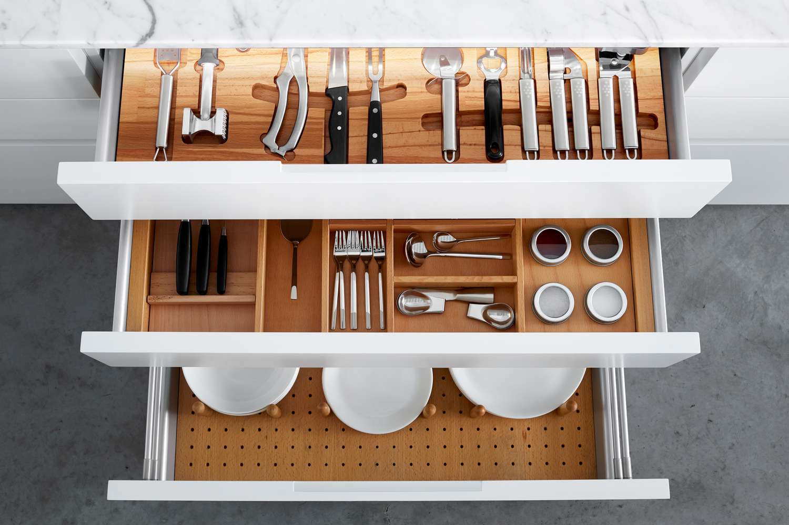Tip: An organized kitchen helps streamline your cooking process. Invest in storage solutions and keep frequently used items within reach.
9. Taste as You Go
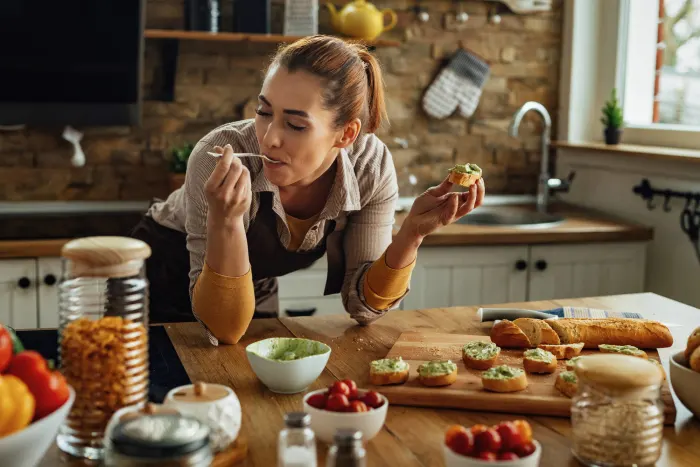Tip: Continuously tasting your food helps you understand how flavors develop and allows you to adjust seasoning for the best results.
10. Experiment with Flavor Pairings
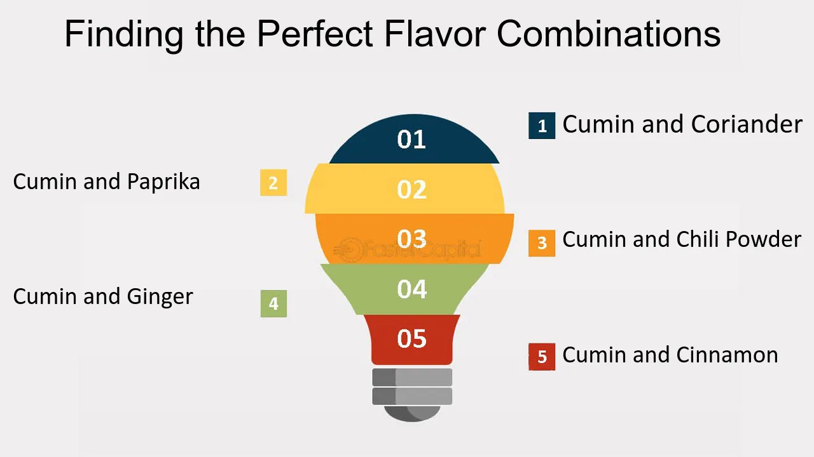Tip: Don't be afraid to try unconventional flavor combinations. Often, unique pairings can create extraordinary dishes.
11. Master the Art of Plating
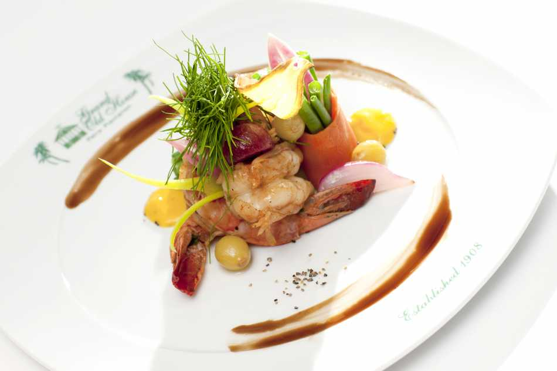Tip: Presentation matters! Take the time to plate your food beautifully. Use contrasting colors and textures to make your dish pop.
12. Clean as You Go
Tip: Keeping your workspace clean while cooking saves time on cleanup and helps maintain a safe cooking environment.
13. Stay Patient
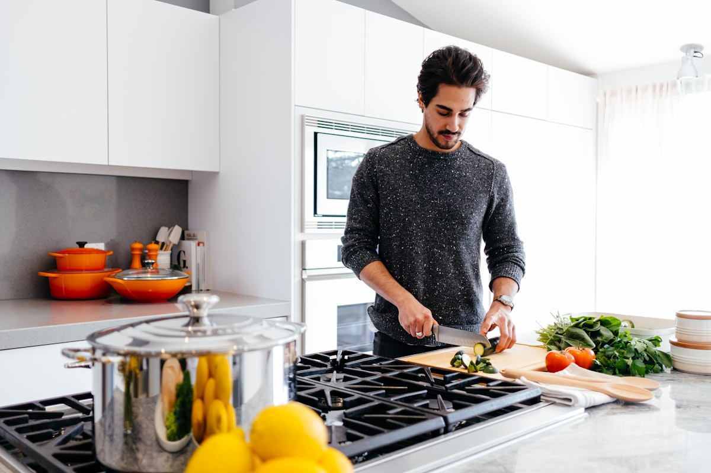Tip: Great cooking takes time. Don't rush the process; allow flavors to develop and dishes to cook through properly.
14. Have Fun!

Tip: Cooking should be enjoyable. Experiment, make mistakes, and most importantly, have fun in the kitchen!
Conclusion
Cooking is an evolving skill that benefits from practice and experimentation. By implementing these tips, you'll not only improve your culinary techniques but also gain confidence in the kitchen. Remember, the most important ingredient in any dish is your passion for cooking. So, gather your ingredients, unleash your creativity, and enjoy the delicious journey ahead!